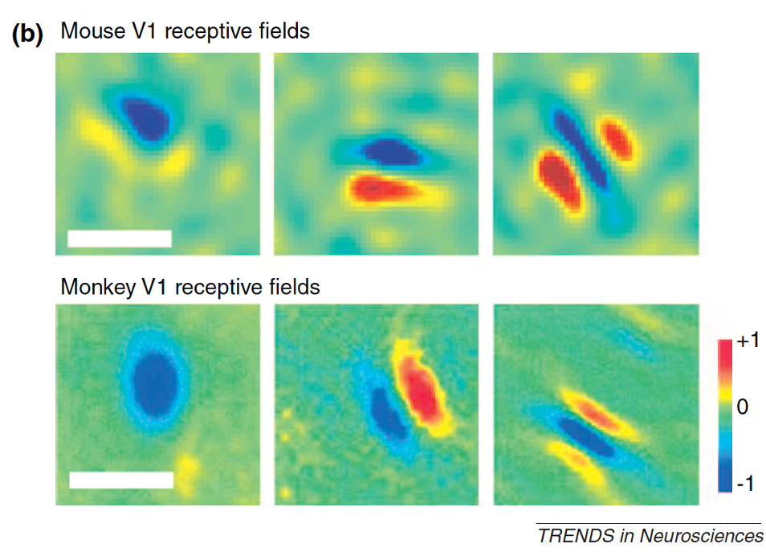
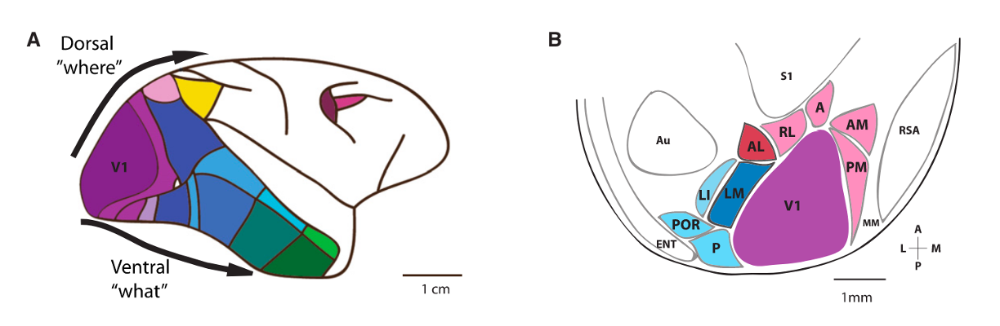

Mouse visual system#
For several decades, much of the work studying visual physiology was carried out in either primate or cat. This began with Hubel and Wiesel mapping receptive fields of “simple” and “complex” cells in the primary visual cortex of the cat. Recordings from neurons in other cortical areas in these animals have revealed neurons that respond to simple shapes, color, and motion - both direction selectivity as well as responses selective for more complex motion patters. Based both on these responses and on anatomical studies, there is thought to be two parallel streams, the “Dorsal” and “Ventral” streams. The dorsal stream is considered colloquially to be the “where” pathway, with many areas sensitive to motion, while the ventral stream is considered to be the “what” pathway, with neurons showing increased selectivity and invariance in their responses to objects and faces. Another way of framing these pathways is an “egocentric” and an “allocentric” pathway.
Cortical physiology#
Starting in the early 2000s, researchers begans studying visual physiology and behavior in the mouse in earnest. Cris Niell used extracellular electrophysiology to record receptive fields of neurons in the mouse Primary visual cortex, finding receptive fields that looked very similar to those found in cat and primate [Niell and Stryker, 2008]. Many neurons showed orientation selectivity - selectively responding to gratings at a particular orientation - or direction selectivity - responding selectivity to gratings moving in a particular direction. Neurons also showed linear and non-linear summation that were the hallmarks of simple and complex cells. The key difference in these receptive fields is in their size. Mice have much poorer spatial resolution than primates and cats [Huberman and Niell, 2011]. The scale bars below are 20 degrees for the mouse data but 1 degree for the monkey!

Using Two-photon calcium imaging allowed large populations of neurons to be recorded across the cortex, and another key early result was that mouse (and rodents broadly) lack the orientation columns found in primates and cats. While the latter species have neurons that are tuned with similar orientations organized in columns, the rodent visual cortex has a “salt and pepper” organization, where the orientation selectively of neighboring neurons are randomly organized. [Ohki et al., 2005]
Beyond V1 there are additional higher visual areas (or HVAs) that receive input from V1 and are connected in a hierarchical manner. Higher visual areas each contain a distinct map of Retinotopy, i.e. each visual area has its own map of visual space. The borders between higher visual areas can be identified based on reversals in the retinotopic map at area boundaries.
An early question was whether neurons in different mouse HVAs had distinct visual responses to subserve distinct functions. One framing of this question is whether there are streams akin to the dorsal and ventral streams in primate and cat. Early studies using Two-photon calcium imaging compared the Spatial frequency and Temporal frequency tuning across several HVAs, finding evidence of functional differences between some of the areas [Andermann et al., 2011, Marshel et al., 2011]. These results, alongside connectivity data, are suggestive that such a dorsal/ventral organization might be present - though with much more interconnection and a lower hierarchical depth than found in primates/cats. See Niell [2011] for a primer on early studies of mouse HVA functional properties.

By studying visual physiology in awake mice, it was discovered early on that the locomotor activity of the mouse modulates the visual responses of some neurons in the visual cortex, such that the visually evoked responses are larger when the mouse is running than when it is stationary [Niell and Stryker, 2010]. It’s good to remember, however, that there is great diversity in these responses, and most estimates see only 10-15% of neurons are significantly modulated by running. (see also [de Vries et al., 2020]). Not only are some neurons’ visual responses modulated by running activity, but some neurons exhibit running speed tuning independent of their visual responses [Saleem et al., 2013]. Beyond running, other movements - including whisking, face movements and larger body movements - have been found to account for a significant part of the variability of activity throughout cortex, including the visual cortex. [Musall et al., 2019] [Stringer et al., 2019]
Finally, in mouse, there is considerable behavioral influence on neural activity even in the early visual areas where signatures of choice, experience, and learning are present. [Pakan et al., 2018]